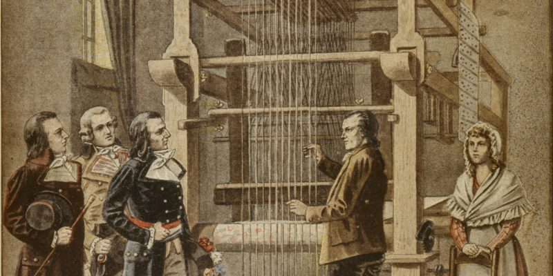

Historia de la computadora
Te explicamos y resumimos la historia de la computadora, cómo eran las primeras que se inventaron y cuáles son sus características principales.
La historia de la computadora es el recuento de los eventos, innovaciones y desarrollos tecnológicos del campo de la informática y la automatización, que dieron origen a las máquinas que conocemos como computadoras, computadores u ordenadores. Registra además su mejoramiento y actualización hasta alcanzar las versiones miniaturizadas y veloces del siglo XXI
Las computadoras, como todos sabemos, son las máquinas de cálculo más avanzadas y eficientes inventadas por el ser humano. Están dotadas del suficiente poder de operaciones, la suficiente autonomía y velocidad como para reemplazarlo en muchas tareas, o permitirle dinámicas de trabajo virtuales y digitales que nunca antes en la historia habían sido posibles.
La invención de este tipo de aparatos en el siglo XX revolucionó para siempre la manera en que entendemos los procesos industriales, el trabajo, la sociedad y un sinfín de otras áreas de nuestra vida. Afecta desde el modo mismo de relacionarnos, hasta el tipo de operaciones de intercambio de información a escala mundial que somos capaces de realizar.
Antecedentes de la computadora
La historia de la computadora tiene largos antecedentes, que se remontan a las primeras reglas de cálculo y a las primeras máquinas diseñadas para facilitarle al ser humano la tarea de la aritmética. El ábaco, por ejemplo, fue un importante adelanto en la materia, creado alrededor de 4.000 a. C.
También hubo inventos muy posteriores, como la máquina de Blaise Pascal, conocida como Máquina de Pascal o Pascalina, creada en 1642. Consistía en una serie de engranajes que permitían realizar operaciones aritméticas. Esta máquina fue mejorada por Gottfried Leibinitz en 1671 y se dio inicio a la historia de las calculadoras.
Los intentos del ser humano por automatizar continuaron desde entonces: Joseph Marie Jacquard inventó en 1802 un sistema de tarjetas perforadas para intentar automatizar sus telares, y en 1822 el inglés Charles Babbage empleó dichas tarjetas para crear una máquina de cálculo diferencial.
Solamente doce años después (1834), logró innovar su máquina y obtener una máquina analítica capaz de las cuatro operaciones aritméticas y de almacenar números en una memoria (hasta 1.000 números de 50 dígitos). Por este motivo, a Babbage se le considera el padre de la computación, ya que esta máquina representa un salto hacia el mundo de la informática como lo conocemos.
Invención de la computadora
La invención de la computadora no puede atribuirse a una sola persona. Se considera a Babbage como el padre de la rama de saberes que luego será la computación, pero no será sino hasta mucho más adelante que se hará la primera computadora como tal.
Otro importante fundador en este proceso fue Alan Turing, creador de una máquina capaz de calcular cualquier cosa, y que llamó “máquina universal” o “máquina de Turing”. Las ideas que sirvieron para construirla fueron las mismas que luego dieron nacimiento al primer computador.
Otro importante caso fue el de ENIAC (Electronic Numeral Integrator and Calculator, o sea, Integrador y Calculador Electrónico Numeral), creado por dos profesores de la universidad de Pensilvania en 1943, considerado el abuelo de los computadores propiamente dicho. Consistía en 18.000 tubos al vacío que llenaban un cuarto entero.
Invención de los transistores
La historia de los computadores no habría tenido el curso que tuvo sin la invención en 1947 de los transistores, fruto de los esfuerzos de los laboratorios Bell en Estados Unidos. Estos aparatos son interruptores eléctricos fabricados con materiales sólidos y sin necesidad del vacío.
Este descubrimiento fue fundamental para la fabricación de los primeros microchips, y permitieron el paso de los aparatos eléctricos a los electrónicos. Los primeros circuitos integrados (o sea, chips) aparecieron en 1958, fruto de los esfuerzos de Jack Kilby y Robert Noyce. El primero recibió el Premio Nobel de Física en 2000 por el hallazgo.
El primer computador

Los primeros computadores surgieron como máquinas de cálculo lógico, debido a las necesidades de los aliados durante la Segunda Guerra Mundial. Para decodificar las transmisiones de los bandos en guerra debían hacerse cálculos rápido y constantemente.
Por eso, la Universidad de Harvard diseñó en 1944 la primera computadora electromecánica, con ayuda de IBM, bautizada Mark I. Ocupaba unos 15 metros de largo y 2,5 de alto, envuelta en una caja de vidrio y acero inoxidable. Contaba con 760.000 piezas, 800 kilómetros de cables y 420 interruptores de control. Prestó servicios durante 16 años.
Al mismo tiempo, en Alemania, se había desarrollado la Z1 y Z2, modelos de prueba de computadores similares construidos por Konrad Zuse, quien completó su modelo Z3 totalmente operacional, basado en el sistema binario. Era más pequeño y de más barata construcción que su competidor estadounidense.
La primera computadora de uso comercial
En febrero de 1951 apareció la Ferranti Mark 1, una versión moderna de la computadora norteamericana del mismo nombre que estaba disponible comercialmente. Fue sumamente importante en la historia del computador, pues contaba con un índice de registros, que permitía la lectura más fácil de un conjunto de palabras en la memoria.
Por esa razón surgieron hasta treinta y cuatro patentes distintas de su desarrollo. En los años posteriores sirvió de base para la construcción de las computadoras IBM, muy exitosas industrial y comercialmente.
El primer lenguaje de programación

En 1953 apareció FORTRAN, acrónimo de The IBM Mathematical Formula Translation (“Traducción de fórmulas matemáticas de IBM”), desarrollado como el primer lenguaje formal de programación, o sea, el primer programa diseñado para fabricar programas computacionales, por los programadores de IBM, liderados por John Backus.
Inicialmente se desarrolló para el computador IBM 704, y para una variada gama de aplicaciones científicas y de ingeniería, razón por la cual tuvo una amplia serie de versiones a lo largo de medio siglo de implementación. Es todavía uno de los dos lenguajes de programación más populares, especialmente para los supercomputadores del mundo.